SIMPEL KAN (Sistem Pencetakan Pelaporan Pembelanjaan Kecamatan) adalah aplikasi berbasis web yang dirancang khusus untuk membantu proses pengelolaan keuangan dan aset di lingkungan Kecamatan Caringin, Kabupaten Garut.
Sistem ini mencakup beberapa modul utama:
| Modul | Fungsi |
|---|---|
| SPJ Digital | Pengajuan, konsolidasi, dan verifikasi Surat Pertanggungjawaban keuangan secara digital |
| Kegiatan Anggaran | Pengelolaan data kegiatan dan pagu anggaran per tahun |
| Aset / BMD | Pencatatan, monitoring kondisi, QR Code, dan dokumen KIB/KIR aset milik daerah |
| Laporan | Rekap realisasi anggaran dengan fitur export PDF dan Excel |
| Notifikasi | Pemberitahuan real-time untuk setiap aksi penting dalam sistem |
| Dashboard | Ringkasan eksekutif keuangan dan aset sesuai peran pengguna |
Manual book ini disusun untuk memberikan panduan lengkap dan detail kepada seluruh pengguna sistem SIMPEL KAN, agar:
SIMPEL KAN memiliki 5 peran pengguna utama dengan hak akses yang berbeda-beda:
| No | Peran (Role) | Deskripsi | Modul yang Diakses |
|---|---|---|---|
| 1 | Staf Kasubag Umum | Mengelola data kondisi dan lokasi aset | Aset |
| 2 | Staf Keuangan | Mengelola keuangan, konsolidasi SPJ, input aset, kelola kegiatan | Dashboard, SPJ, Kegiatan, Aset, Laporan |
| 3 | Kasi (Kepala Seksi) | Mengajukan SPJ untuk kegiatan di seksinya (5 seksi) | Dashboard Kasi, Pengajuan SPJ |
| 4 | Sekmat (Sekretaris Kecamatan) | Memverifikasi/menolak SPJ, monitoring seluruh data | Dashboard, Verifikasi SPJ, Kegiatan, Aset, Laporan |
| 5 | Camat | Melihat ringkasan eksekutif (read-only) | Dashboard Eksekutif |
Untuk mengakses SIMPEL KAN, pengguna memerlukan:
| Kebutuhan | Keterangan |
|---|---|
| Browser | Google Chrome (direkomendasikan), Mozilla Firefox, atau Microsoft Edge versi terbaru |
| Koneksi Internet | Stabil, minimal 1 Mbps |
| Resolusi Layar | Minimal 1366×768 piksel (laptop/desktop) |
| Akun | Email dan password yang telah didaftarkan oleh Administrator |
| URL Aplikasi | https://sikemas.initd.web.id |
Untuk masuk ke sistem SIMPEL KAN, ikuti langkah-langkah berikut:
https://sikemas.initd.web.id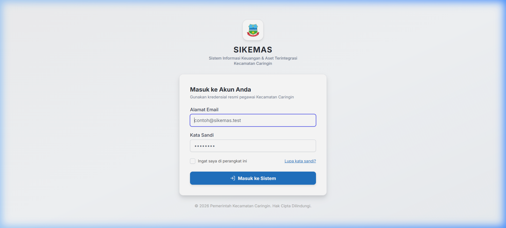
Untuk keluar dari sistem SIMPEL KAN:
Dashboard adalah halaman utama yang tampil setelah pengguna berhasil login. Tampilan dashboard berbeda-beda sesuai peran pengguna. Dashboard menyajikan ringkasan data keuangan dan aset secara visual menggunakan kartu statistik dan grafik interaktif.
Dashboard untuk Staf Keuangan dan Sekmat menampilkan informasi operasional yang komprehensif, meliputi:
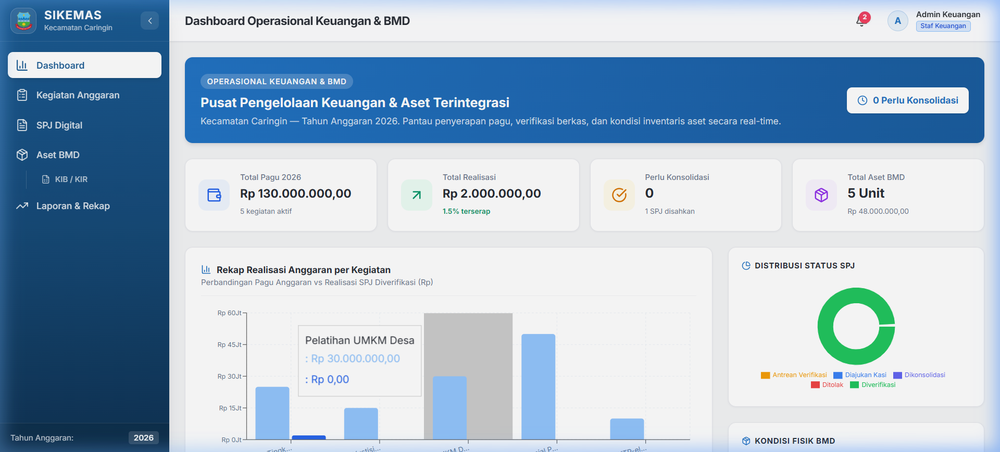
| Elemen | Keterangan |
|---|---|
| Total Pagu | Jumlah seluruh pagu anggaran dari semua kegiatan yang aktif pada tahun berjalan |
| Realisasi | Jumlah total SPJ yang sudah berstatus "Diverifikasi" (sudah sah) |
| Sisa Anggaran | Selisih antara Total Pagu dan Realisasi |
| Jumlah SPJ | Total SPJ yang telah diajukan dalam sistem |
| Grafik | Visualisasi perbandingan Pagu vs Realisasi per kegiatan dalam bentuk chart |
Dashboard Kasi menampilkan ringkasan khusus untuk kegiatan dan SPJ milik seksi yang bersangkutan. Kasi hanya dapat melihat data kegiatan yang ditugaskan kepada seksinya sendiri.
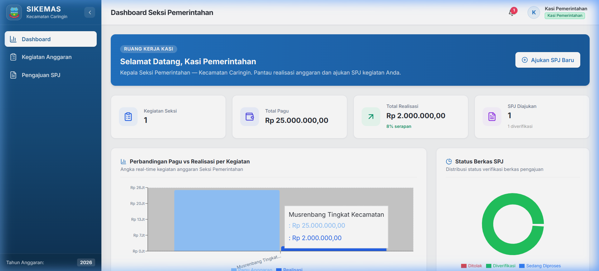
Dashboard Sekmat memiliki tampilan serupa dengan Dashboard Staf Keuangan, namun dengan penekanan pada jumlah SPJ yang menunggu verifikasi. Di sidebar, Sekmat akan melihat badge (angka) yang menunjukkan berapa SPJ yang perlu diverifikasi.
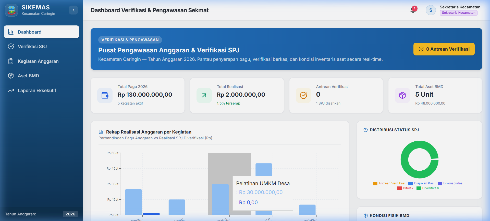
Modul SPJ Digital adalah modul utama dalam SIMPEL KAN yang menangani seluruh alur pengajuan Surat Pertanggungjawaban (SPJ) keuangan, mulai dari pengajuan oleh Kasi, konsolidasi oleh Staf Keuangan, hingga verifikasi akhir oleh Sekretaris Kecamatan (Sekmat).
Sebelum membahas fitur, penting untuk memahami alur status SPJ dalam sistem:
| Status | Warna Badge | Keterangan |
|---|---|---|
| Draft | Abu-abu | SPJ baru dibuat, belum diajukan |
| Diajukan Kasi | Biru | Kasi telah mengajukan, menunggu Staf Keuangan |
| Dikonsolidasi | Indigo | Staf Keuangan sudah konsolidasi, bisa diajukan ke Sekmat |
| Diajukan Verifikasi | Kuning/Amber | Menunggu verifikasi Sekmat |
| Diverifikasi | Hijau | SPJ telah diverifikasi dan sah (final, tidak bisa diubah) |
| Ditolak | Merah | SPJ ditolak oleh Sekmat, perlu revisi |
Fitur ini digunakan oleh Kasi (Kepala Seksi) untuk membuat pengajuan SPJ baru. Kasi hanya dapat mengajukan SPJ untuk kegiatan yang ditugaskan kepada seksinya.
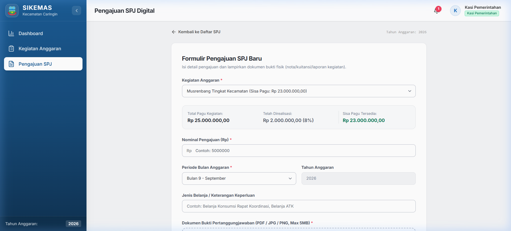
Setelah mengajukan SPJ, Kasi dapat memantau status semua pengajuannya di halaman daftar SPJ:
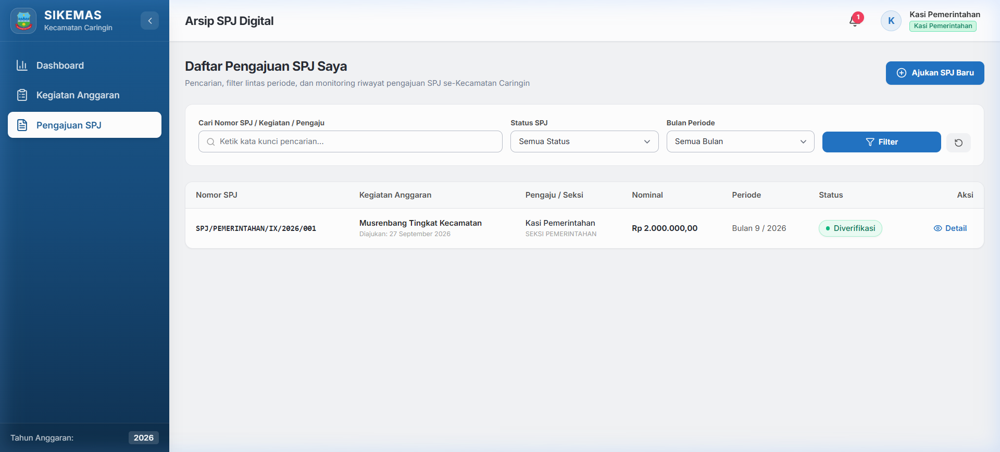
Setelah Kasi mengajukan SPJ, Staf Keuangan bertugas melakukan konsolidasi. Konsolidasi adalah proses verifikasi awal dan penetapan nomor SPJ resmi.
SPJ/SEKSI/BULAN/TAHUN/URUT)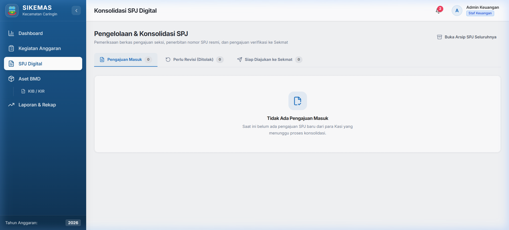
SPJ/{NAMA_SEKSI}/{BULAN_ROMAWI}/{TAHUN}/{NOMOR_URUT}SPJ/PEMERINTAHAN/IX/2026/001
Sekretaris Kecamatan (Sekmat) memiliki wewenang untuk memverifikasi (menyetujui) atau menolak SPJ yang telah diajukan oleh Staf Keuangan.
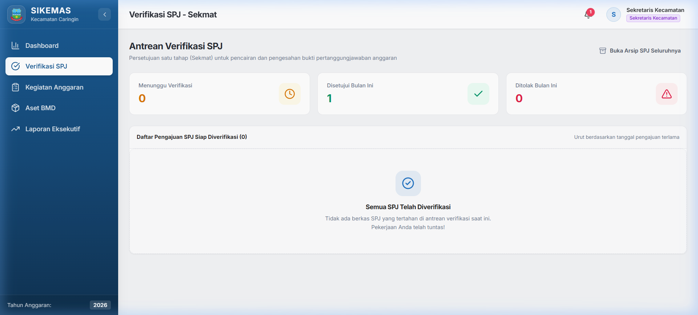
Halaman Arsip SPJ menampilkan seluruh riwayat SPJ dalam bentuk tabel dengan fitur filter dan pencarian. Semua peran dapat mengakses arsip ini (dengan batasan sesuai hak akses masing-masing).
| Filter | Keterangan |
|---|---|
| Status | Filter berdasarkan status SPJ (Draft, Diajukan, Dikonsolidasi, dll) |
| Kegiatan | Filter berdasarkan nama kegiatan anggaran |
| Bulan | Filter berdasarkan periode bulan SPJ |
| Tahun | Filter berdasarkan tahun anggaran |
| Pencarian | Cari berdasarkan nomor SPJ atau nama kegiatan |
Halaman detail SPJ menampilkan seluruh informasi lengkap tentang satu SPJ, termasuk:
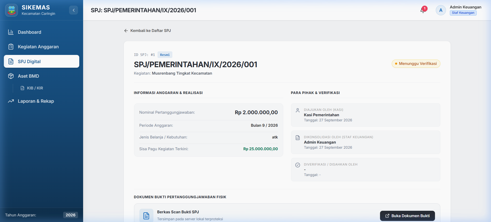
Modul Kegiatan Anggaran digunakan oleh Staf Keuangan untuk mengelola data kegiatan dan pagu anggaran. Kegiatan inilah yang nantinya menjadi dasar pengajuan SPJ oleh Kasi.
Halaman ini menampilkan seluruh kegiatan yang terdaftar dalam tahun anggaran berjalan, lengkap dengan informasi pagu, realisasi, dan sisa anggaran masing-masing kegiatan.
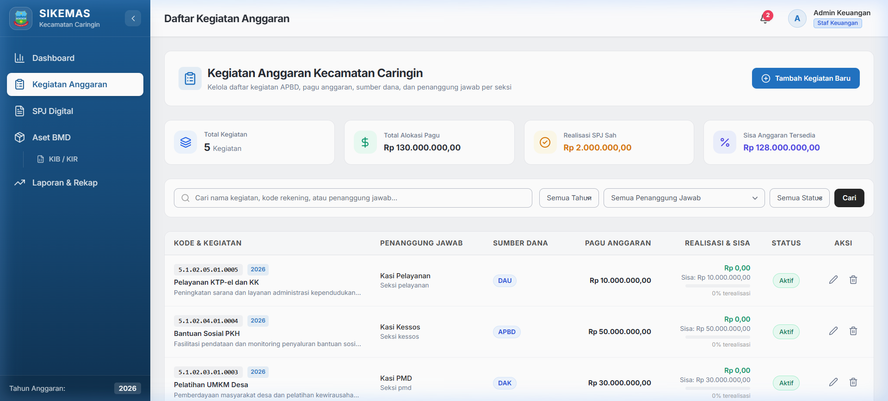
| Kolom | Keterangan |
|---|---|
| Nama Kegiatan | Nama kegiatan anggaran |
| Kode Rekening | Kode rekening anggaran kegiatan |
| Pagu | Jumlah anggaran yang dialokasikan (dalam Rupiah) |
| Realisasi | Jumlah anggaran yang sudah terpakai (SPJ diverifikasi) |
| Sisa | Pagu dikurangi Realisasi |
| Kasi | Kepala Seksi yang bertanggung jawab atas kegiatan |
| Sumber Dana | Sumber pendanaan (APBD, DAU, DAK, BHP, ADD, Lainnya) |
| Status | Aktif, Selesai, atau Dibatalkan |
Untuk menambahkan kegiatan anggaran baru (hanya Staf Keuangan):
Untuk mengedit kegiatan:
Modul Aset / BMD (Barang Milik Daerah) digunakan untuk mencatat, memantau, dan mengelola seluruh aset milik Kecamatan Caringin. Modul ini mencakup pencatatan aset, monitoring kondisi, pembuatan QR Code, dan dokumen KIB/KIR.
Halaman ini menampilkan seluruh aset yang tercatat dalam sistem dengan fitur filter dan pencarian.
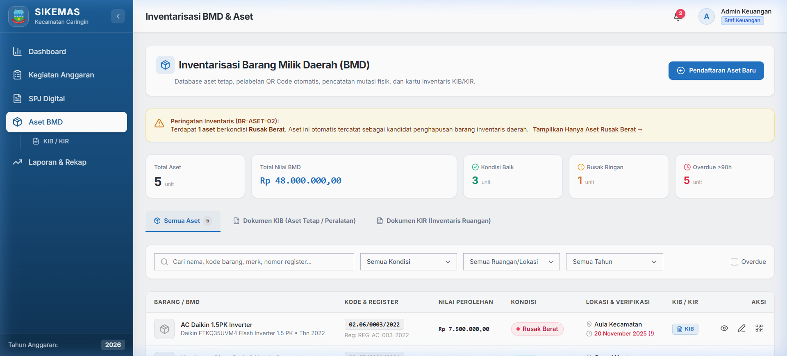
| Kolom | Keterangan |
|---|---|
| Kode Barang | Kode unik aset (format: Golongan.Sub/Urut/Tahun, contoh: 02.06/0012/2024) |
| Nama | Nama/deskripsi barang |
| Tahun Perolehan | Tahun aset diperoleh |
| Nilai | Nilai perolehan aset (dalam Rupiah) |
| Kondisi | Baik, Rusak Ringan, atau Rusak Berat |
| Lokasi | Lokasi penempatan aset saat ini |
| Penanggung Jawab | Pegawai yang bertanggung jawab atas aset |
Untuk menambahkan aset baru (hanya Staf Keuangan):
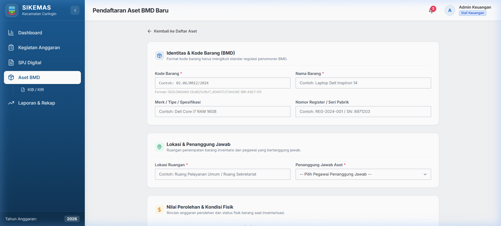
| Field | Wajib | Keterangan |
|---|---|---|
| Kode Barang | ✅ | Format: XX.XX/XXXX/YYYY (contoh: 02.06/0012/2024) |
| Nama Barang | ✅ | Nama deskriptif aset |
| Tahun Perolehan | ✅ | Tahun kapan aset diperoleh |
| Nilai Perolehan | ✅ | Harga perolehan (Rupiah) |
| Kondisi | ✅ | Baik / Rusak Ringan / Rusak Berat |
| Lokasi | ✅ | Lokasi penempatan fisik aset |
| Penanggung Jawab | ✅ | Pilih pegawai yang bertanggung jawab |
| Cara Perolehan | ✅ | Pembelian / Hibah / Sumbangan / Produksi Sendiri / Lainnya |
| Merk/Tipe | — | Merk atau tipe barang (opsional) |
| Nomor Register | — | Nomor inventaris (opsional) |
| Ukuran | — | Dimensi fisik (opsional) |
| Bahan | — | Material/bahan (opsional) |
| Foto | — | Upload foto aset (opsional) |
Halaman detail aset menampilkan seluruh informasi lengkap tentang satu aset, termasuk foto, QR Code, dokumen KIB/KIR, dan riwayat perubahan kondisi/lokasi.
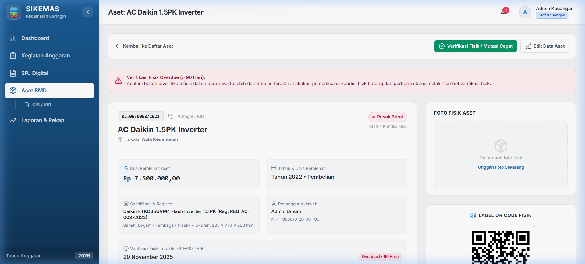
Setiap aset memiliki QR Code yang bisa diunduh dan dicetak untuk ditempel pada aset fisik.
Modul Laporan menyediakan rekap data keuangan dalam bentuk tabel dan grafik, serta fitur export ke format PDF dan Excel. Modul ini dapat diakses oleh Staf Keuangan, Sekmat, dan Camat.
Halaman laporan menampilkan ringkasan realisasi anggaran per kegiatan dengan filter tahun anggaran.
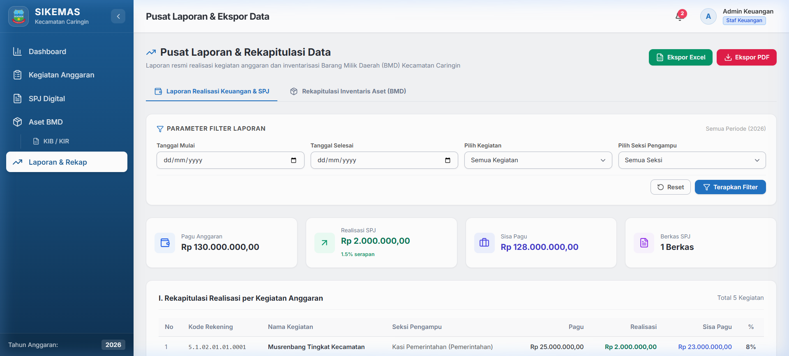
Data laporan dapat di-export ke format PDF dan Excel untuk keperluan cetak dan pelaporan.
Sistem notifikasi SIMPEL KAN memberikan pemberitahuan kepada pengguna secara otomatis setiap kali terjadi aksi penting yang relevan dengan peran mereka.
Notifikasi dapat diakses melalui dua cara:
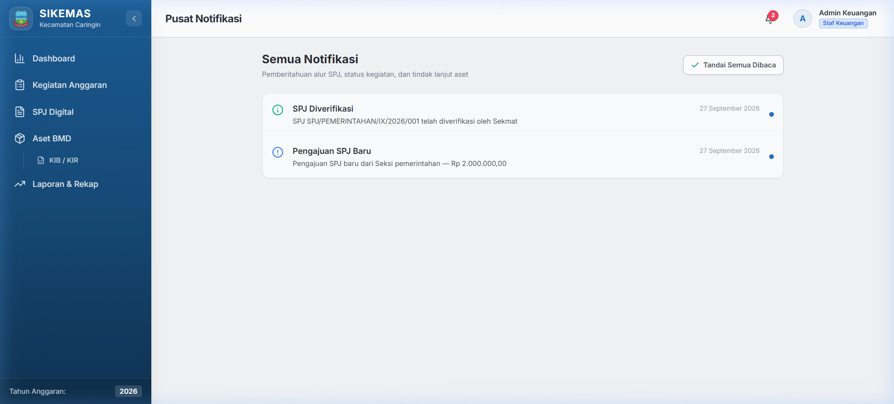
Sistem mengirim notifikasi secara otomatis untuk event-event berikut:
| Event | Penerima | Tipe |
|---|---|---|
| Kasi submit pengajuan SPJ baru | Staf Keuangan | action |
| Staf Keuangan ajukan SPJ ke Sekmat | Sekmat | action |
| Sekmat verifikasi (approve) SPJ | Kasi + Staf Keuangan | info |
| Sekmat tolak SPJ | Staf Keuangan | warning |
| Aset baru ditambahkan | Staf Umum | info |
| Realisasi melebihi 80% pagu | Staf Keuangan + Sekmat | warning |
| Verifikasi fisik aset overdue (>90 hari) | Staf Umum | warning |
Setiap pengguna SIMPEL KAN dapat mengelola data profil dan mengubah password melalui halaman profil.
Untuk mengubah data profil:
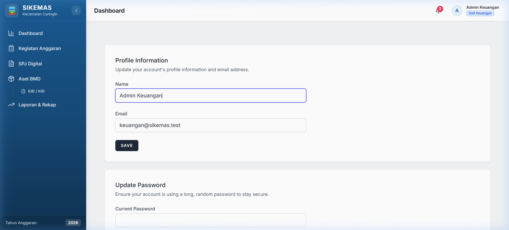
Untuk mengubah password:
Berikut adalah daftar akun pengguna yang telah disediakan secara default oleh sistem. Password default untuk semua akun adalah: password
| No | Nama | Peran (Role) | Seksi | |
|---|---|---|---|---|
| 1 | Admin Umum | umum@sikemas.test |
Staf Kasubag Umum | — |
| 2 | Admin Keuangan | keuangan@sikemas.test |
Staf Keuangan | — |
| 3 | Kasubag Keuangan | kasubag.keuangan@sikemas.test |
Staf Keuangan | — |
| 4 | Kasi Pemerintahan | kasi.pem@sikemas.test |
Kasi | Pemerintahan |
| 5 | Kasi Trantib | kasi.trantib@sikemas.test |
Kasi | Ketentraman & Ketertiban |
| 6 | Kasi PMD | kasi.pmd@sikemas.test |
Kasi | Pemberdayaan Masyarakat Desa |
| 7 | Kasi Kesra | kasi.kesra@sikemas.test |
Kasi | Kesejahteraan Rakyat |
| 8 | Kasi Pelayanan | kasi.pelayanan@sikemas.test |
Kasi | Pelayanan Umum |
| 9 | Sekretaris Kecamatan | sekmat@sikemas.test |
Sekmat | — |
| 10 | Camat Caringin | camat@sikemas.test |
Camat | — |
| Fitur | Staf Umum | Staf Keuangan | Kasi | Sekmat | Camat |
|---|---|---|---|---|---|
| Dashboard | — | ✅ Operasional | ✅ Kasi | ✅ Monitoring | ✅ Eksekutif |
| SPJ — Ajukan | — | — | ✅ | — | — |
| SPJ — Konsolidasi | — | ✅ | — | — | — |
| SPJ — Verifikasi | — | — | — | ✅ | — |
| SPJ — Lihat Arsip | — | ✅ Semua | ✅ Miliknya | ✅ Semua | — |
| Kegiatan — Kelola | — | ✅ CRUD | — | ✅ View | — |
| Aset — Tambah | — | ✅ | — | — | — |
| Aset — Update Kondisi | ✅ | ✅ | — | — | — |
| Aset — Lihat | ✅ | ✅ | — | ✅ | — |
| Aset — Generate QR | ✅ | ✅ | — | — | — |
| Aset — Generate KIB/KIR | — | ✅ | — | — | — |
| Laporan — Lihat | — | ✅ | — | ✅ | ✅ |
| Laporan — Export PDF/Excel | — | ✅ | — | ✅ | — |
| Notifikasi | ✅ | ✅ | ✅ | ✅ | ✅ |
| Profil | ✅ | ✅ | ✅ | ✅ | ✅ |
| No | Kode | Nama Seksi |
|---|---|---|
| 1 | pemerintahan | Pemerintahan |
| 2 | trantib | Ketentraman & Ketertiban |
| 3 | pmd | Pemberdayaan Masyarakat Desa |
| 4 | kesra | Kesejahteraan Rakyat |
| 5 | pelayanan | Pelayanan Umum |
| Data | Format | Contoh |
|---|---|---|
| Nominal Rupiah | Rp XX.XXX.XXX,XX |
Rp 15.750.000,00 |
| Tanggal | DD MMMM YYYY |
27 September 2026 |
| Nomor SPJ | SPJ/SEKSI/BULAN_ROMAWI/TAHUN/URUT |
SPJ/PEMERINTAHAN/IX/2026/001 |
| Kode Barang Aset | GOL.SUB/URUT/TAHUN |
02.06/0012/2024 |
| Masalah | Penyebab | Solusi |
|---|---|---|
| Tidak bisa login | Email/password salah, atau akun dinonaktifkan | Periksa email dan password. Jika tetap gagal, hubungi Administrator. |
| Akun terkunci | Terlalu banyak percobaan login (5x gagal) | Tunggu 1 menit, kemudian coba lagi dengan password yang benar. |
| Tidak bisa ajukan SPJ | Sisa pagu tidak cukup, atau ada SPJ ditolak yang belum ditindaklanjuti | Periksa sisa pagu kegiatan. Selesaikan SPJ yang berstatus "Ditolak" terlebih dahulu. |
| File bukti gagal upload | Ukuran file melebihi 5 MB, atau format tidak didukung | Kompres file atau konversi ke format JPG/PNG/PDF dengan ukuran < 5 MB. |
| Menu tidak muncul | Role pengguna tidak memiliki hak akses ke menu tersebut | Menu ditampilkan sesuai peran. Hubungi Administrator jika ada kekeliruan role. |
| Halaman error 403 | Mencoba mengakses halaman yang tidak diizinkan | Gunakan menu sidebar untuk navigasi. Jangan mengubah URL secara manual. |
| Data tidak ter-update | Cache browser | Tekan Ctrl+Shift+R untuk hard refresh halaman. |